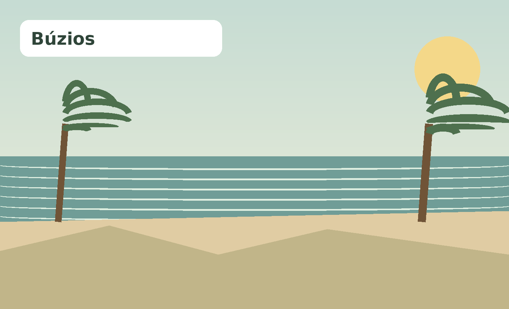
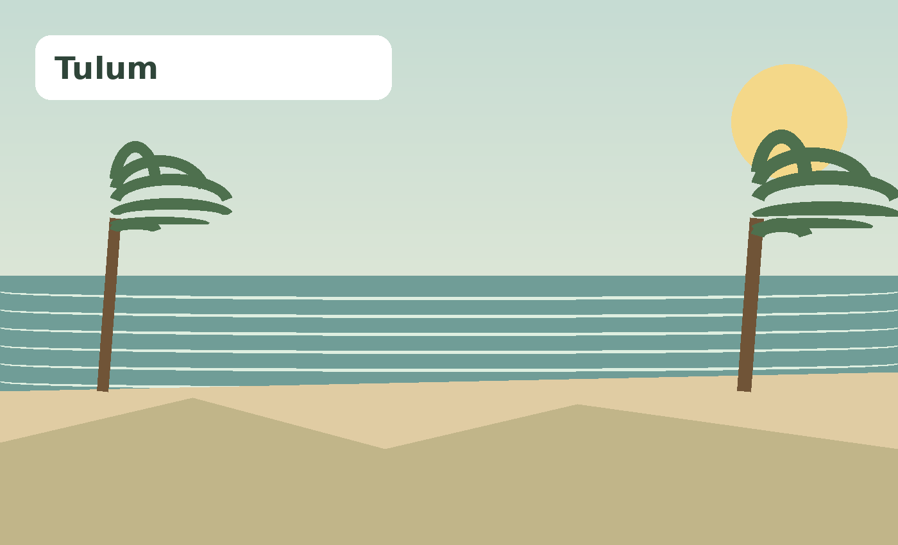
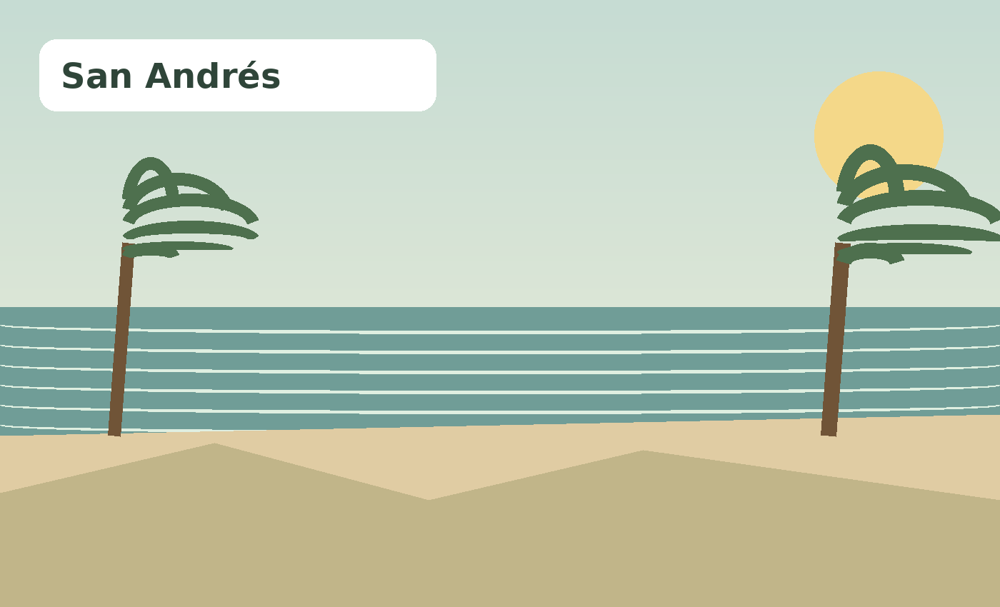

Playa
Costas, agua, atardeceres y tiempo para bajar el ritmo.

Búzios
Playas de aguas tranquilas, calles encantadoras y un ambiente relajado hacen de Búzios una escapada ideal.
¿Por qué ir?
Recorré Rua das Pedras al atardecer, combiná playas como João Fernandes y Azeda, y reservá una salida en barco para descubrir calas.
- Ideal para combinar descanso y experiencias.
- Consultá clima y temporada antes de viajar.
- Reservá con anticipación las actividades más populares.

Tulum
Caribe, arena clara y vestigios mayas junto al mar: Tulum combina descanso, naturaleza y cultura.
¿Por qué ir?
Visitá la zona arqueológica temprano, disfrutá la costa y dejá una tarde para cenotes y gastronomía local.
- Ideal para combinar descanso y experiencias.
- Consultá clima y temporada antes de viajar.
- Reservá con anticipación las actividades más populares.

San Andrés
Una isla caribeña conocida por sus aguas de distintos tonos de azul, arrecifes y excursiones marítimas.
¿Por qué ir?
El paseo por Johnny Cay y el acuario es un clásico; también vale la pena recorrer la isla y reservar tiempo para snorkel.
- Ideal para combinar descanso y experiencias.
- Consultá clima y temporada antes de viajar.
- Reservá con anticipación las actividades más populares.